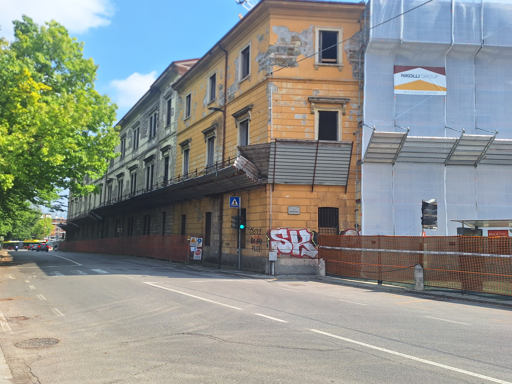
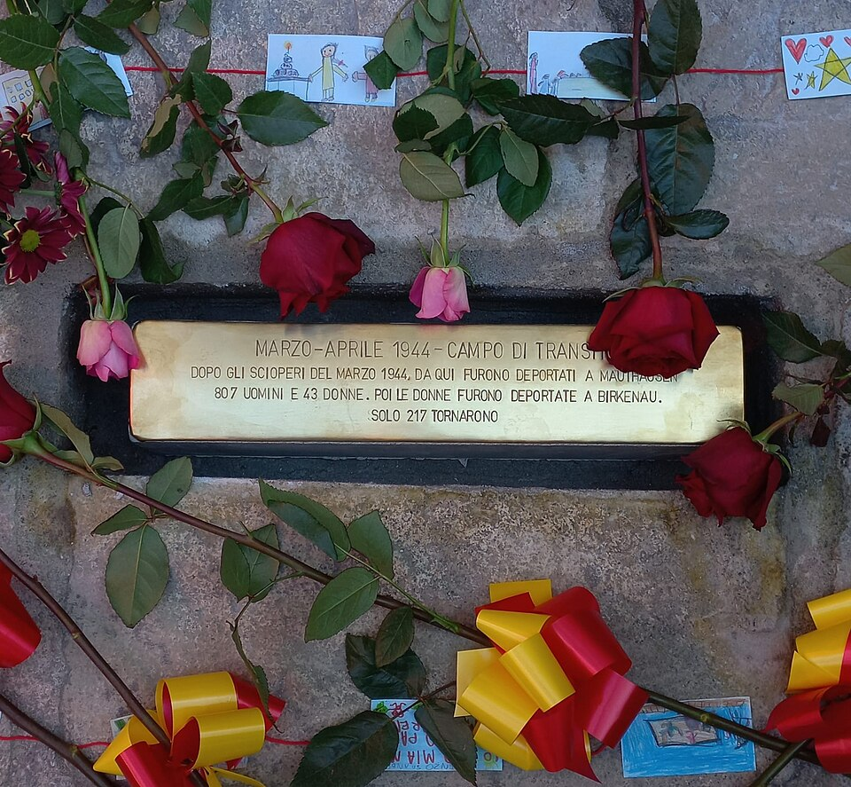

Historical context
Occupied by the Germans upon their arrival in Bergamo, the barracks—previously home to the 78th Infantry Regiment (stationed here since 1921)—was initially considered as a possible transit camp within Italy. The final choice fell on Fossoli, but from early March to April 1944 the barracks effectively functioned as a transit camp for 850 prisoners, 43 of whom were women, destined for deportation to Germany. Most of them had been arrested during the strikes of March 1944. Departing on two trains from Bergamo station, on March 17 and April 5, 1944, they were sent to the Mauthausen camp; from there, the women were transferred to the Birkenau camp.
During their stay at the Bergamo barracks, prisoners were held in dormitories on the first floor overlooking Vicolo San Giovanni. It was in that narrow street that relatives would gather, alone or in groups, hoping to establish contact with them. From those large windows, prisoners threw notes, farewell messages, and words of affection, which were often collected by passersby and delivered to their families.
On March 17, the men and women scheduled for departure were lined up and marched on foot to the station: some passersby showed support, while others mocked them. On April 5, German authorities decided to transport the detainees by bus to prevent further unrest.
Why it is a place of memory
Montelungo Barracks is a fundamental place of memory because it embodies the mechanism of political repression and the transition from civil resistance to the tragedy of deportation. Symbolically, it connects collective acts of resistance—such as the March 1944 strikes—to the machinery of arrest and subsequent deportation to concentration camps.
Many of the prisoners who passed through here were later transferred to the Grumellina Transit Camp. Remembering this place means recognizing that institutional violence often began in ordinary buildings in the heart of cities. Today, in an era in which civil and political rights are often taken for granted, this site reminds us of the cost of freedom and the courage of those who, even when facing deportation, preserved their dignity.
Grumellina Transit Camp
During the Second World War, in the Grumellina area (Grumello al Piano), Camp P.G. N.62 was established for prisoners of war and military internees.
Thousands of men of various nationalities lived here in difficult conditions. Today, it is a place of memory that recalls the suffering of prisoners and the solidarity shown by the local population.
Multimedia content


Sources
Bibliographic sources
- Mario Pelliccioli, Itinerari di memoria. Un percorso a Bergamo tra fascismo, occupazione tedesca e Resistenza, 2023
- Giuseppe Valota, Streikertransport. Political deportation in the industrial area of Sesto San Giovanni, 2007
- Sandro Peli, Working class and general strike (March 1–8), in The Resistance in Italy: history and critique, 2004
Multimedia sources
- Project photo archive
- Waltramp, Montelungo stumbling stone, Wikimedia Commons
- Video: Bergamo, the deportees of Montelungo and the duty of dissent, Bergamo News